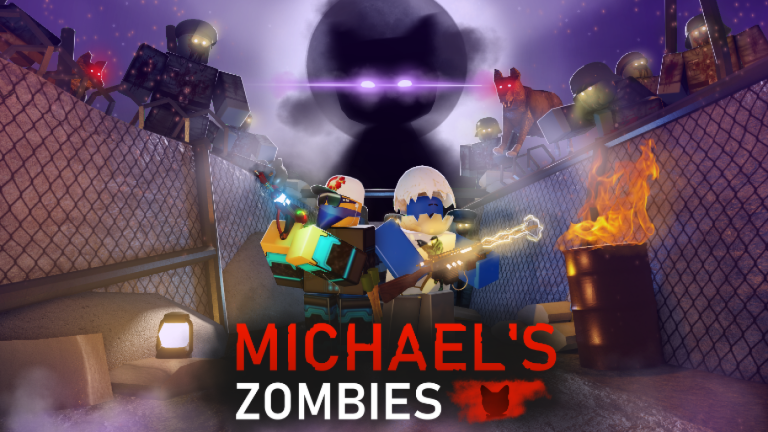

Игра «Зомби Майклса» сосредоточена вокруг нашего главного героя, который побеждает полчища зомби в попытке выжить. В игре у вас есть такие задачи, как добыть электричество, купить силы или победить боссов, из которых выпадают предметы коллекционирования. Кроме того, в игре есть механика уровней как для главного героя, так и для различных вариантов оружия, доступных при открытии сундуков во время матчей. На данный момент в игре доступно 5 карт, каждая из которых отличается механикой, врагами и способами выживания.
Во время игр вам необходимо покупать двери и убирать с пола остатки, чтобы получить доступ к различным скрытым комнатам. В комнатах вы можете найти ящики с оружием, электрические компоненты, автоматы по продаже зелий, а также секретную механику на уникальных картах. Выбор оружия также впечатляет: от простого пистолета до лучевого пистолета от зомби COD.
